Use Case
Lets say we have deployed an application EC2 which interacts with the SQS Service for the sake of high availability and scalability. By default, the communication between the EC2 and the SQS service happens over the internet connection. And there is a requirement for a NAT and Internet Gateway components.
The data flowing over the internet is not really required as both the EC2 and SQS components are within the AWS network only. For the network communication to happen within the AWS network, we need use AWS PrivateLink. This way the network packets remain with the AWS network only which makes the application much more reliable and secure.
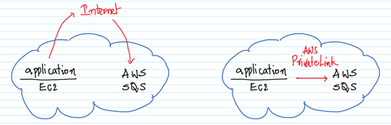
We would be creating a VPC with a Private and Public Subnet. And within each of
the subnets an EC2 instance. First we would be connecting to the EC2 instance
in the Public Subnet and from there to the EC2 in the Private Subnet. On the
EC2 in the Private Subnet, we would be interacting with the SQS Service. In
this scenario the EC2 in the Public Subnet is acting as a jump box or a bastion
box.
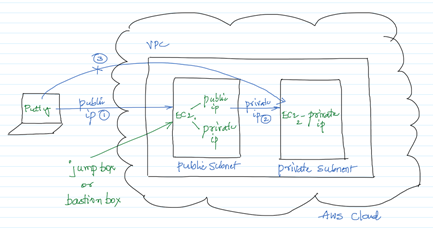
AWS Services: VPC PrivateLink, EC2, IAM
-- In the VPC Management Console, go to the “Elastic IPs" screen and click on “Allocate Elastic IP Address”.
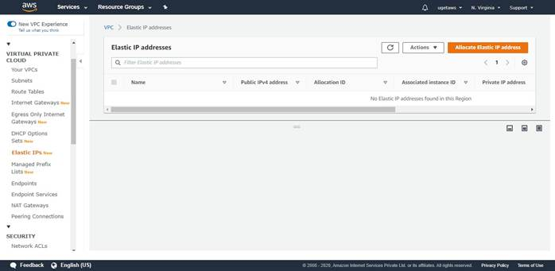
-- Click on Allocate to assign an Elastic IP address as shown below.
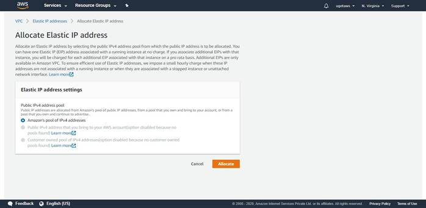
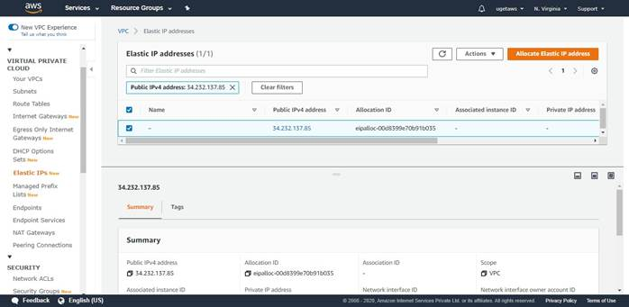
-- Now that the Elastic IP has been created, it’s time to create a new VPC. Go to the “VPC Dashboard” and click on “Launch VPC Wizard”.
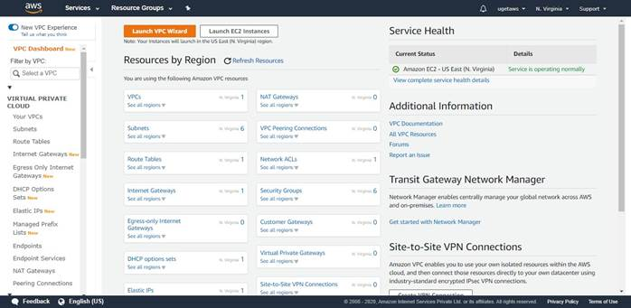
-- Select the “VPC with Public and Private Subnets” option.
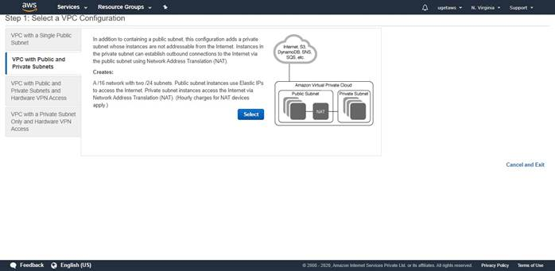
-- Give the VPC a name and select the Elastic IP created earlier. Rest of the default options are good enough. Click on “Create VPC”. It will take a few minutes for the VPC to be created.
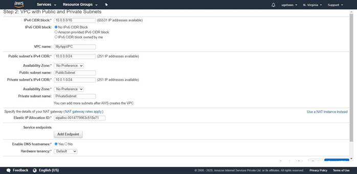
-- We will notice that there are two VPCs. One is the default and the other one is MyAppVPC which we created a few minutes back.
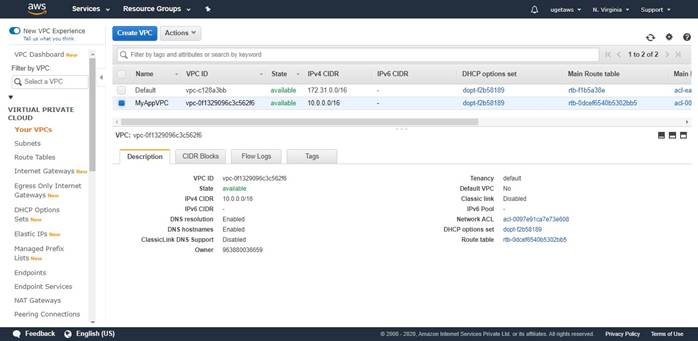
-- Select
the PublicSubnet for the MyAppVPC. Go to actions “Modify auto-assign IP
settings” and make sure “Enable auto-assign public IPv4 address” is checked and
click on “Save”.
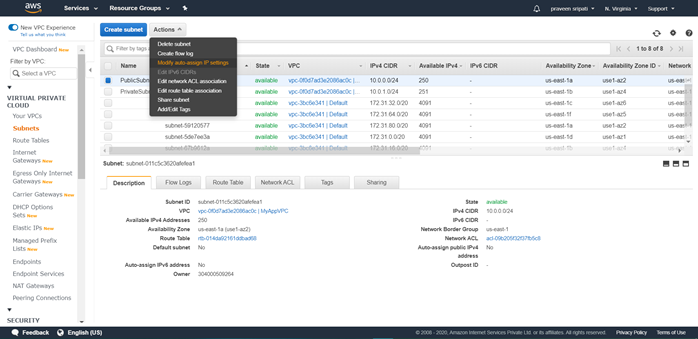

-- Go to the EC2 Management Console, make sure the “New EC2 Experience” is selected on the top left.
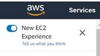
-- Click on the KeyPair link and click on “Create key pair”.
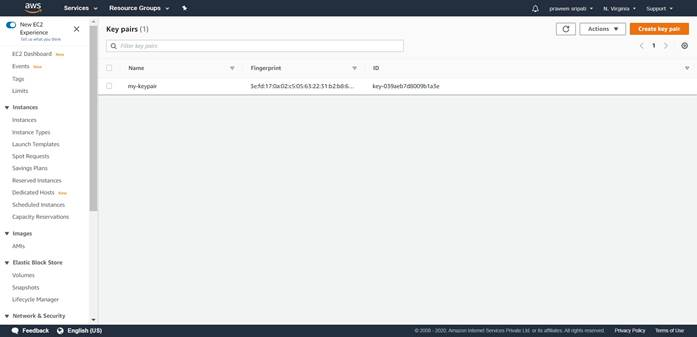
-- Enter the KeyPair name as “MyDemoKeyPair” and click on “Create key pair”.
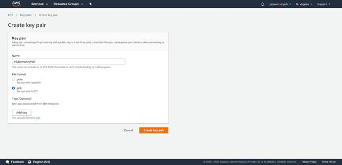
-- Store the Private Key file in the ppk format in a location which can be easily retrieved.
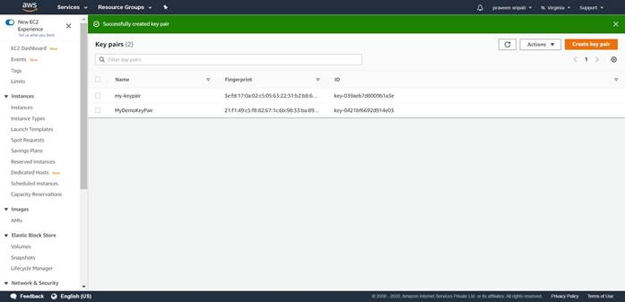
-- Download the pageant.exe from the below
link and open the executable.
https://www.chiark.greenend.org.uk/~sgtatham/putty/latest.html
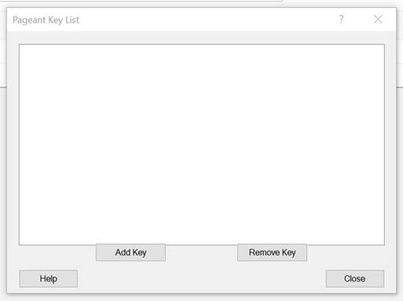
-- Add the
Private Key which has been downloaded earlier.
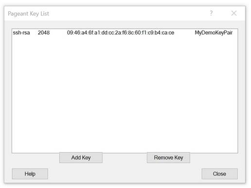
-- Go to the IAM Management Console, click on “Create role”.
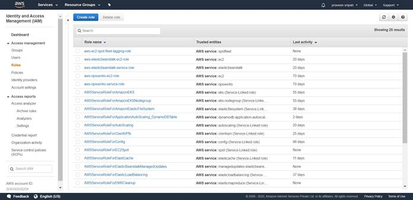
-- Select EC2 as the Service. Click on “Next : Permissions”.
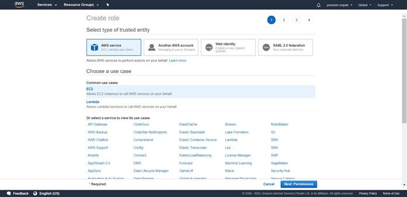
-- Select
AmazonSQSFullAccess Policy. Click on “Next : Tags”.
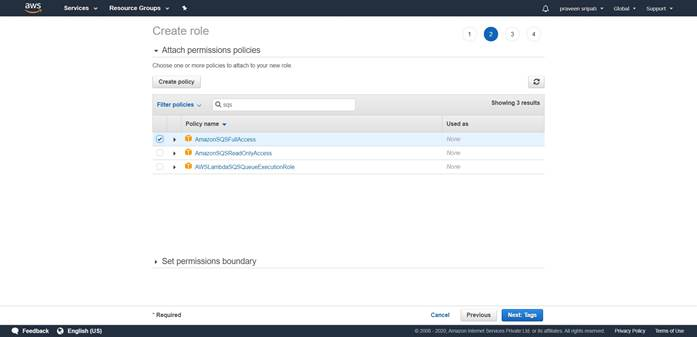
-- Tags
are optional, so click on “Next : Review”.
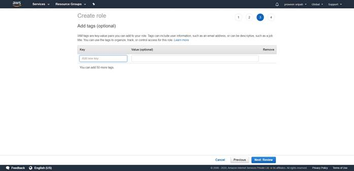
-- Enter
the role name as “Role4EC2-SQS-FA”. Finally, click on “Create role”.
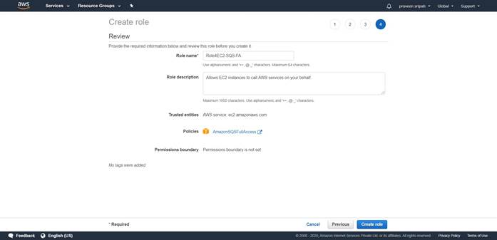
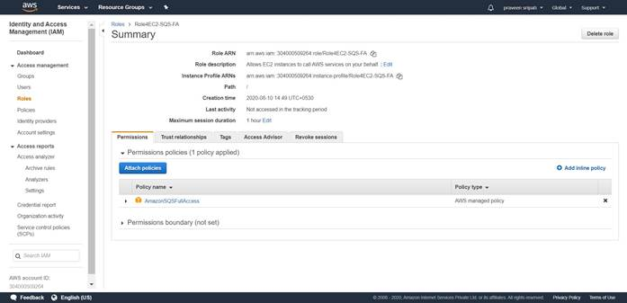
-- Create two EC2 instance, both in the
MyAppVPC with the below details. One in the PrivateSubnet and the other in the
PublicSubnet. These options can be selected in the “Configure instance” options
while creating the EC2 instance.
- t2.micro
- Ubuntu
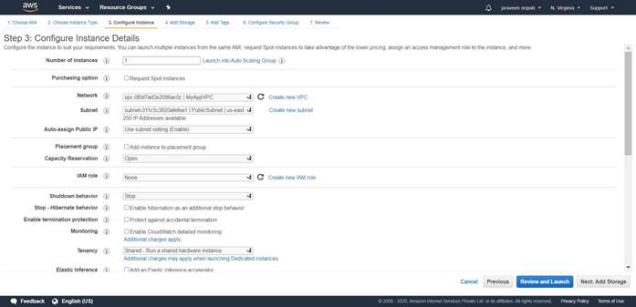
-- Make
sure to allow Port 22/SSH inbound the for both the EC2 instances. Also, attach
the default Security Group for the EC2 instances in the PrivateSubnet.
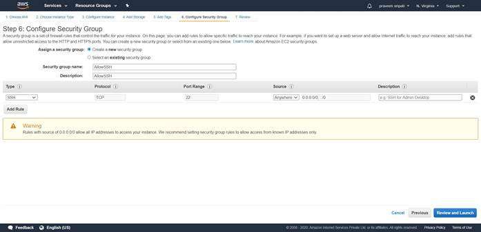
-- Name
the EC2 instances as “MyAppVPC-PublicSubnet” and “MyAppVPC-PrivateSubnet” just
to make it east to identify the EC2 instances.
Notice that the EC2 in the Public Subnet has both the Public and Private IP
address, while the EC2 in the Private Subnet has only the Private IP address.
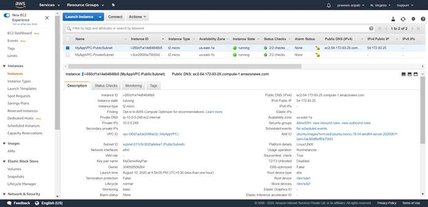
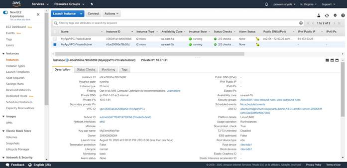
-- Attach
the IAM role created earlier to the EC2 instance in the Private Subnet. The
same can be observed in the properties of the EC2 instance.
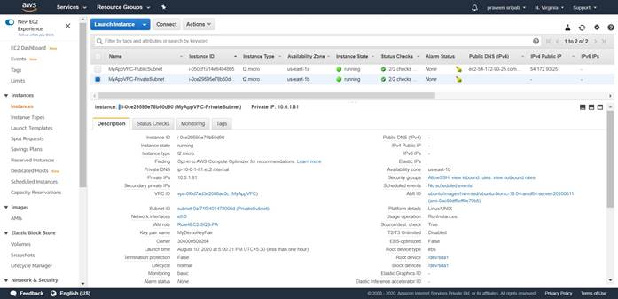
-- Start
Putty, in Host Name enter the username (ubuntu) followed by the symbol @ and
finally the Public IP address of the EC2 in the Public Subnet.
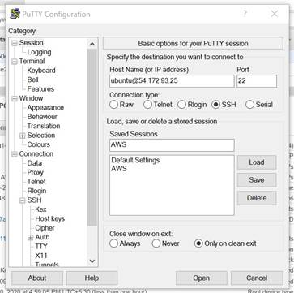
-- In Putty, go to Connection à SSH à Auth.
- Select “Allow agent forwarding”
- Click on Browse for “Private key file authentication” and select the Private Key downloaded in the PPK format.
-
Click on open to connect to the EC2 instance.
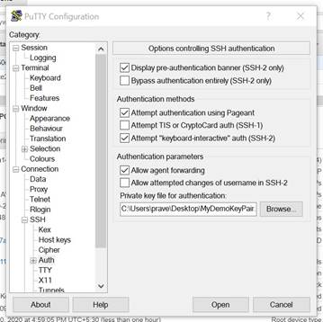
-- Once
connected to the EC2 in the Public Subnet, execute the below command to connect
to the EC2 in the Private Subnet. Replace the IP address with the one from the
EC2 in the Private Subnet. When prompted enter ‘yes’. We should be connected to
the EC2 in the Private Subnet via Putty.
ssh ubuntu@10.0.1.81
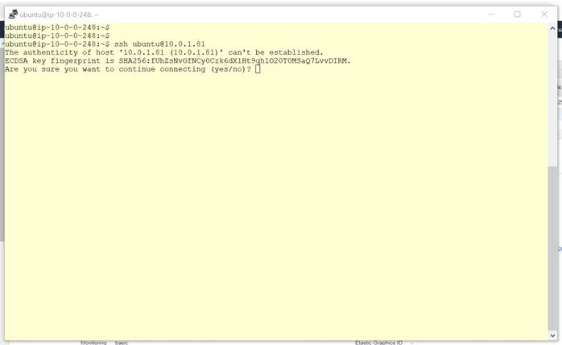
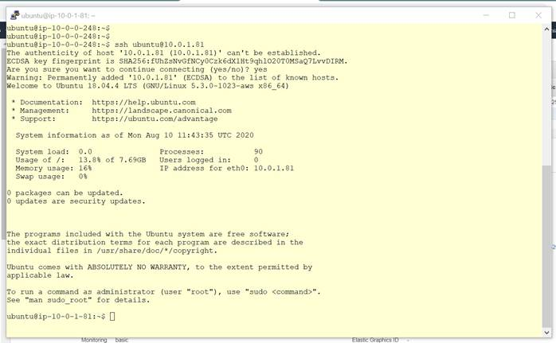
-- Execute the below commands in the EC2 of
the Private Subnet in install the AWS CLI and configure it.
sudo apt-get update
sudo apt-get install python2.7 python-pip -y
pip install awscli –upgrade
export PATH="$PATH:/home/ubuntu/.local/bin/"
mkdir .aws
echo -e "[default]\nregion=us-east-1" > .aws/config
-- Test the internet connectivity on the same EC2 by using the command ‘ping
google.com’. Is should go through.
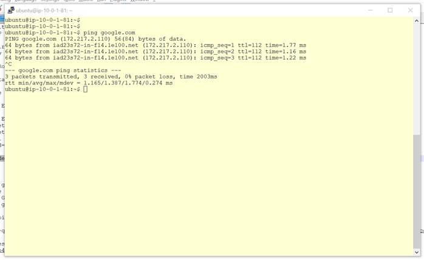
-- Let’s disable the internet connection for this EC2. This way we can be for sure that the application on the EC2 can interact with the AWS Services using the AWS internal network and not the internet.
Select the PrivateSubnet in the VPC Management Console. Click on “Route Table”
property.
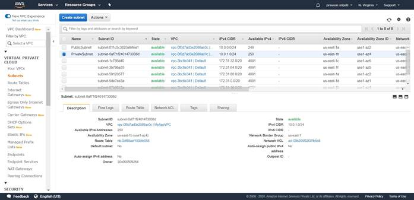
-- Click
on the Routes tab and click on “Edit routes”.
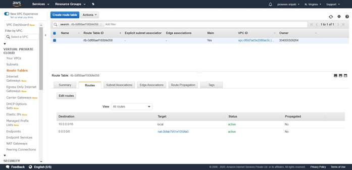
-- Delete
the route with the Destination CIDR range as 0.0.0.0/0 and click on “Save
routes”. This will remove the internet connection for any of the EC2 instances
in the Private Subnet.
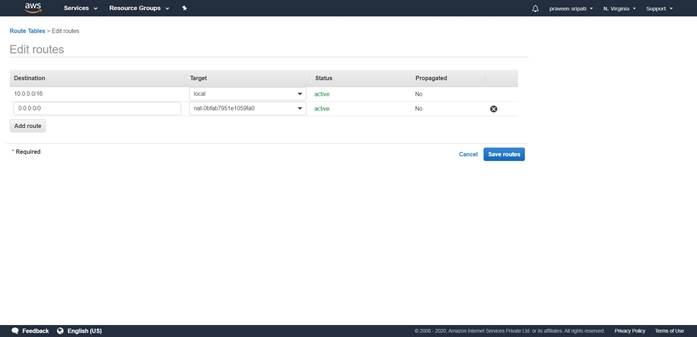
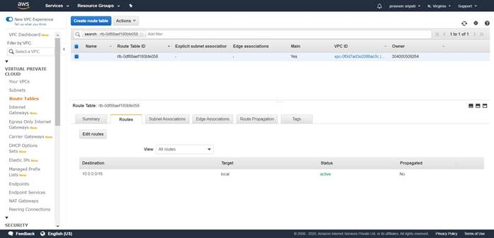
-- Now try
to ping google.com from the internet and notice that if fails as we have
removed the internet connection for the EC2 instance.
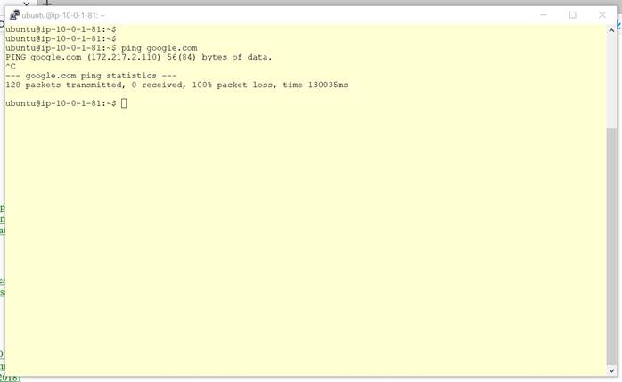
-- In the
VPC Management Console, click on Endpoints link. Click on “Create Endpoint”.
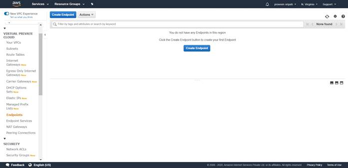
-- Filter
out for the services for sqs and select “com.amazonaws.us-east1.sqs”. Select
the MyAppVPC. Also, make sure only the PrivateSubnet is selected.
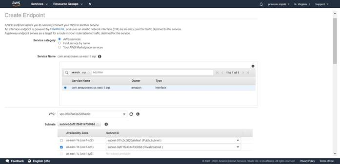
-- Go with
all the default options and click on “Create endpoint”.
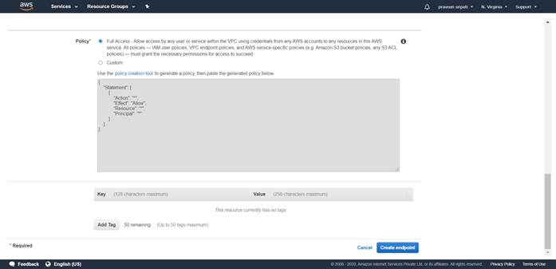
--
Initially end endpoint will be in a pending status and in a few minutes it will
be a changed to available status for it to be used. Make sure to select the
endpoint and from the DNS servers copy the first host name.
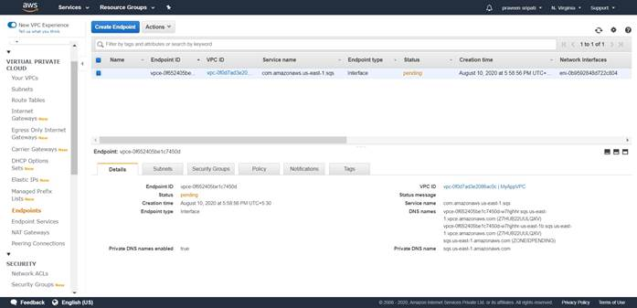
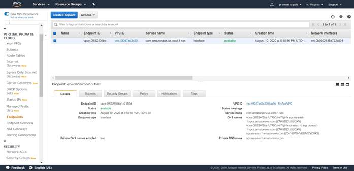
-- Wait
for a few minutes for the DNS propagation to happen and execute the below
command. Make sure to replace ABCD with the hostname got from the previous
step. Once the command gets executed successfully a queue will be creates in
SQS and the command returns a QueueURL which is an identifier to interact with
the queue.
aws sqs create-queue --queue-name MyQueue --endpoint-url https://ABCD
Note that the command ran successfully without any internet connection and used
the AWS internal network. This makes it more secure and reliable.
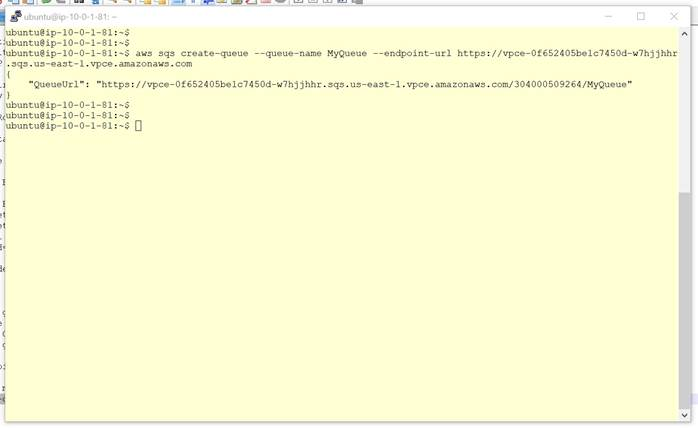
-- The
creation of the Queue can be observed from the AWS Management Console.
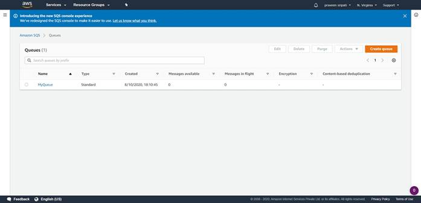
-- Finally, the following AWS resources have to be cleaned up in the same
order.
- Terminate the EC2 instances
- Delete the NAT Gateway
- Release the ElasticIP
- Delete the EndPoint
- Finally delete the VPC (MyAppVPC)
- Delete the Role in the IAM which has been created for the EC2
- Delete the SQS